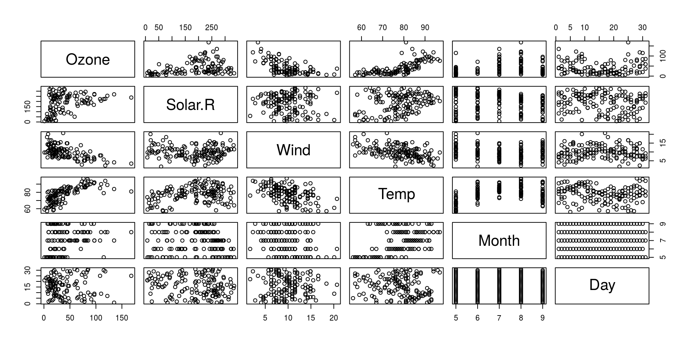
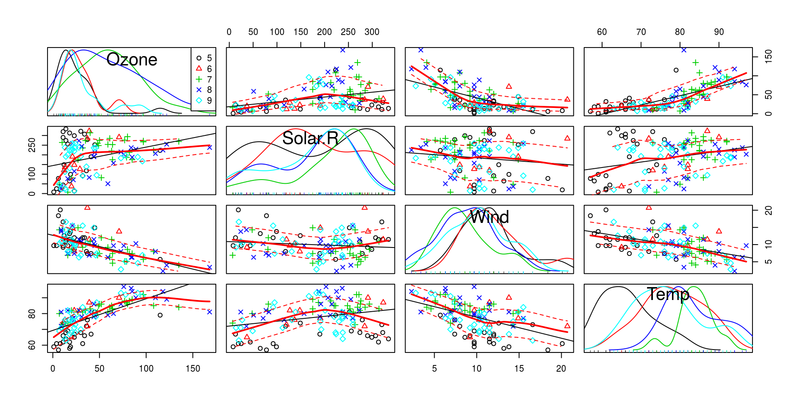
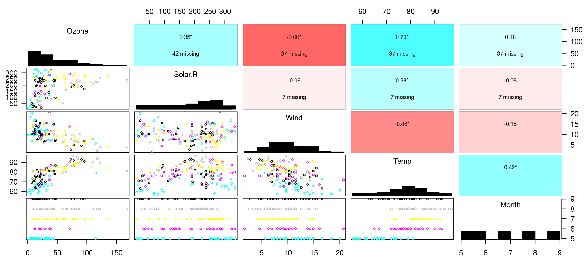
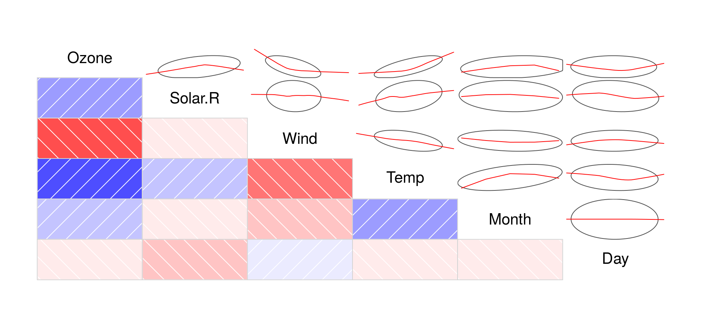
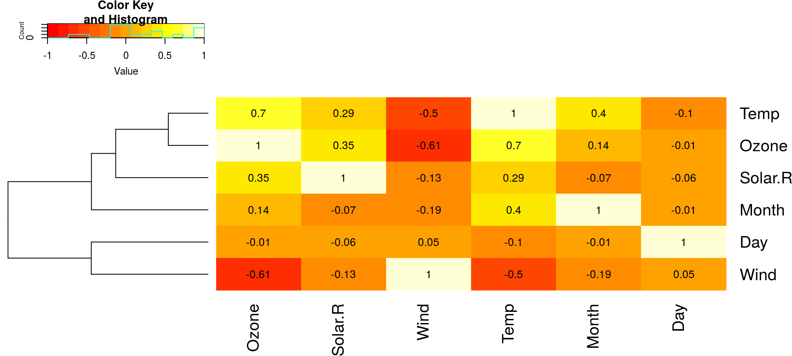
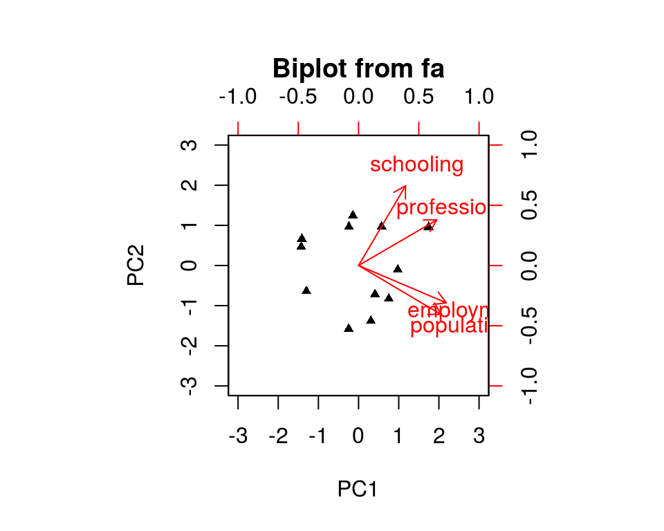
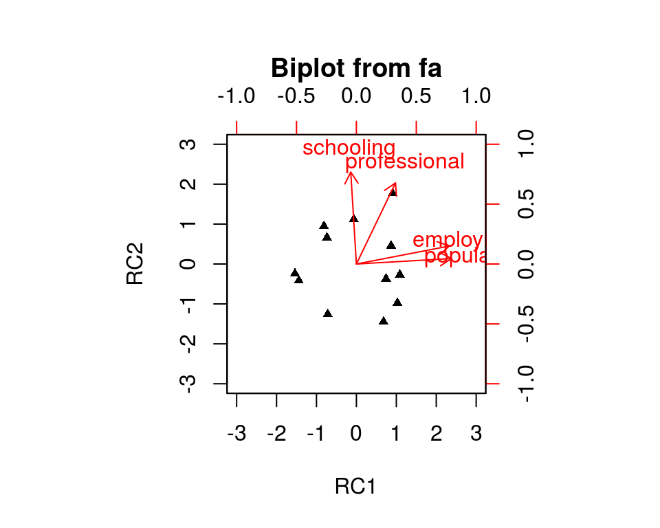
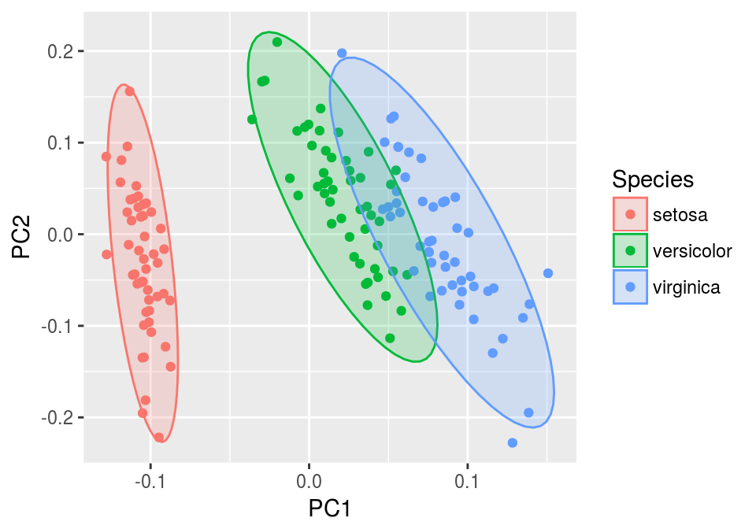
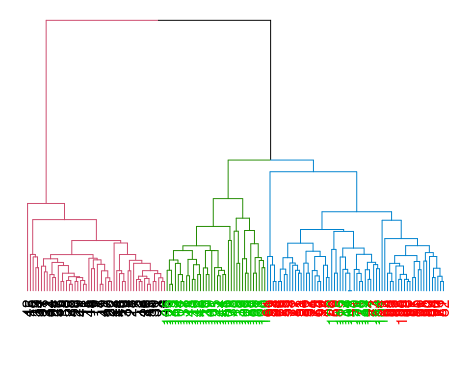

2017-05-18 21:15:44
目录
数据模式
图示相关性: 散点矩阵图(1)
plot(airquality) # 或pairs(airquality)

图示相关性: 散点矩阵图(2)
car::spm(~ Ozone+Solar.R+Wind+Temp | Month, data = airquality)

图示相关性: 散点矩阵图(3)
gpairs::gpairs(airquality[,1:5], upper.pars=list(scatter="stats"),
scatter.pars=list(col=airquality$Month), stat.pars=list(verbose=FALSE))

相关性定量: 相关图
library(corrgram)
corrgram(airquality, upper.panel=panel.ellipse, col.regions=colorRampPalette(
c("red", "white","blue")))

相关性定量: 热力图
gplots::heatmap.2(cor(airquality, use="complete"), Colv=FALSE, trace="none",
cellnote=round(cor(airquality, use="complete"), 2), notecol="black")

DataExplorer包
- 利用
rmarkdown框架制作可重复html报告- 基于
render函数的封装函数GenerateReport
- 基于
- 区分连续/离散变量，初步呈现
- 数据结构
- 缺失值分析
- 变量分布
- 数据关联
library(DataExplorer)
GenerateReport(airquality, output_file="report.html",
output_dir="A04 Basic Analysis/A04_05_exploratory2_files/")
相关分析
相关 Correlation
相关分析是研究现象之间是否存在某种依存关系，并对具体有依存关系的现象探讨其相关方向以及相关程度。一般用相关系数衡量:
- 符号: 相关关系的方向
- 绝对值: 相关程度的大小(样本量不能太小)
常用的相关系数:
- Pearson相关系数: 等距/等比连续变量
- Spearman秩相关系数: 有序变量
- Kendall秩相关系数: 有序变量
相关矩阵
- 线形相关(Pearson's \(\rho\))
> cor(airquality[,c(1,3)], use="complete.obs")
Ozone Wind
Ozone 1.0000000 -0.6015465
Wind -0.6015465 1.0000000
相关系数即中心化和标准化后的协方差 \[r=\frac{s_{xy}}{\sqrt{s_{xx}}\sqrt{s_{yy}}}\]
> cov(airquality[,c(1,3)], use="complete.obs")
Ozone Wind
Ozone 1088.20052 -70.93853
Wind -70.93853 12.77959
> -70.93853 / sqrt(1088.20052*12.77959)
[1] -0.6015466
- 秩相关(Kendall / Spearman)
- Kendall秩相关
> cor(airquality[,c(1,3)], use="complete.obs", + method="kendall") Ozone Wind Ozone 1.0000000 -0.4283603 Wind -0.4283603 1.0000000- Spearman秩相关
> cor(airquality[,c(1,3)], use="complete.obs", + method="spearman") Ozone Wind Ozone 1.0000000 -0.5901551 Wind -0.5901551 1.0000000
相关性检验
- 线形相关(Pearson's \(\rho\))
> cor.test(~Ozone+Wind, airquality,
+ method="pearson")
Pearson's product-moment correlation
data: Ozone and Wind
t = -8.0401, df = 114, p-value = 9.272e-13
alternative hypothesis:
true correlation is not equal to 0
95 percent confidence interval:
-0.7063918 -0.4708713
sample estimates:
cor
-0.6015465
- 秩相关(Kendall / Spearman)
> cor.test(~Ozone+Wind, airquality,
+ method="spearman")
Spearman's rank correlation rho
data: Ozone and Wind
S = 413650, p-value = 3.135e-12
alternative hypothesis:
true rho is not equal to 0
sample estimates:
rho
-0.5901551降维
降维 Dimension Reduction
涉及到向量计算时，随着维数的增加，计算量呈指数倍增长。——维数灾难
降维是指在某些限定条件下，降低随机变量个数，得到一组“不相关”主变量的过程。
- 目的: 减少维数(压缩)的同时，尽可能减少信息损失(统计)
- 将高维数据线形/非线性映射到低维空间，可消除共线性
常用方法:
- 线形降维: 主成分分析PCA、线形判别分析LDA、因子分析FA
- 非线性降维:
- 局部: 局部线形嵌入LLE、Laplacian特征映射
- 全局: 核主成分分析KPCA、自编码网络Auto-encoder、自组织映射SOM、多维标度MDS
PCA - 选择/提取
- 判断主成分个数 (11维–>1维)
library(psych)
fa.parallel(USJudgeRatings[,-1], fa = "pc",
n.iter = 100, show.legend = FALSE)

- 提取主成分
principal(USJudgeRatings[,-1], nfactors=1)
PC1 h2 u2 com
INTG 0.92 0.84 0.1565 1
DMNR 0.91 0.83 0.1663 1
DILG 0.97 0.94 0.0613 1
CFMG 0.96 0.93 0.0720 1
DECI 0.96 0.92 0.0763 1
PREP 0.98 0.97 0.0299 1
FAMI 0.98 0.95 0.0469 1
ORAL 1.00 0.99 0.0091 1
WRIT 0.99 0.98 0.0196 1
PHYS 0.89 0.80 0.2013 1
RTEN 0.99 0.97 0.0275 1
PC1
SS loadings 10.13
Proportion Var 0.92
Mean item complexity = 1
Test of the hypothesis that 1 component is sufficient.
The root mean square of the residuals (RMSR) is 0.04
with the empirical chi square 6.21 with prob < 1
Fit based upon off diagonal values = 1PCA - 旋转
- 2个主成分(碎石图略)
> principal(Harman.5[,1:4], nfactors=2, + rotate="none")
PC1 PC2 h2 u2 com
population 0.86 -0.51 0.99 0.0098 1.6
schooling 0.49 0.83 0.92 0.0773 1.6
employment 0.91 -0.39 0.98 0.0218 1.4
professional 0.81 0.47 0.88 0.1182 1.6
PC1 PC2
SS loadings 2.46 1.32
Proportion Var 0.61 0.33
Cumulative Var 0.61 0.94
Proportion Explained 0.65 0.35
Cumulative Proportion 0.65 1.00
Mean item complexity = 1.6
Test of the hypothesis that 2 components are sufficient.
The root mean square of the residuals (RMSR) is 0.04
with the empirical chi square 0.29 with prob < NA
Fit based upon off diagonal values = 0.99
- 主成分旋转去噪
> principal(Harman.5[,1:4], nfactors=2, + rotate="varimax")
RC1 RC2 h2 u2 com
population 0.99 0.06 0.99 0.0098 1.0
schooling -0.06 0.96 0.92 0.0773 1.0
employment 0.97 0.19 0.98 0.0218 1.1
professional 0.41 0.85 0.88 0.1182 1.4
RC1 RC2
SS loadings 2.10 1.67
Proportion Var 0.52 0.42
Cumulative Var 0.52 0.94
Proportion Explained 0.56 0.44
Cumulative Proportion 0.56 1.00
Mean item complexity = 1.1
Test of the hypothesis that 2 components are sufficient.
The root mean square of the residuals (RMSR) is 0.04
with the empirical chi square 0.29 with prob < NA
Fit based upon off diagonal values = 0.99PCA - 旋转(续)
biplot(principal(Harman.5[,1:4], nfactors=2,
rotate="none"))

biplot(principal(Harman.5[,1:4], nfactors=2,
rotate="varimax"))

PCA - 生成新数据集
- 矩阵矢积运算: 主成分载荷矩阵，获得新的降维后的数据集
> pc <- principal(Harman.5[,1:4], nfactors=2, rotate="varimax") > newdat <- cbind(Harman.5, Harman.5[,1:4] %*% pc$loadings) # 或 newdat <- cbind(Harman.5, predict(pc, Harman.5[,1:4]))
- 初始线形回归
> summary(lm(housevalue~., data=data.frame(
+ newdat[,1:5])))
Coefficients:
Estimate Std. Error t value Pr(>|t|)
(Intercept) -8074.2063 10459.8286 -0.772 0.4654
population 0.6484 1.5245 0.425 0.6834
schooling 2140.0969 952.8307 2.246 0.0595 .
employment -2.9228 4.1764 -0.700 0.5066
professional 27.8149 14.2324 1.954 0.0916 .
---
Signif. codes: 0 ‘***’ 0.001 ‘**’ 0.01 ‘*’ 0.05 ‘.’
0.1 ‘ ’ 1
Residual standard error: 3122 on 7 degrees of freedom
Multiple R-squared: 0.847, Adjusted R-squared: 0.7596
F-statistic: 9.689 on 4 and 7 DF, p-value: 0.005552
- 主成分回归
> summary(lm(housevalue~., data=data.frame(
+ newdat[,5:7])))
Coefficients:
Estimate Std. Error t value Pr(>|t|)
(Intercept) 14198.12 2357.420 6.023 0.000197 ***
RC1 -5.56 1.187 -4.682 0.001148 **
RC2 55.08 11.359 4.849 0.000909 ***
---
Signif. codes: 0 ‘***’ 0.001 ‘**’ 0.01 ‘*’ 0.05 ‘.’
0.1 ‘ ’ 1
Residual standard error: 3698 on 9 degrees of freedom
Multiple R-squared: 0.724, Adjusted R-squared: 0.6628
F-statistic: 11.81 on 2 and 9 DF, p-value: 0.003045聚类
聚类 Clustering
将数据集中在某些方面具有相似性的数据成员进行分类组织的过程，属无监督机器学习的一种。
常见的方法:
- 划分聚类: K-Means, CLARA
- 层次聚类: CURE, ROCK, BIRCH
- 基于密度的聚类: DBSCAN, GDBSCAN, OPTICS, FDC
- 基于网格的聚类: BANG, WaveCluster, STING
- 其他
K-means聚类
聚类正确率为1-16/150=89.3%
> clust <- kmeans(iris[,1:4], centers=3)
> table(clust$cluster, iris$Species)
setosa versicolor virginica
1 50 0 0
2 0 48 14
3 0 2 36
library(ggfortify)
autoplot(kmeans(iris[,1:4], 3), iris,
colour="Species",
frame=TRUE, frame.type="norm")

层次聚类
聚类正确率为1-14/150=90.7%
> clust <- hclust(dist(iris[,1:4]), "ave")
> table(cutree(clust, k=3), iris$Species)
setosa versicolor virginica
1 50 0 0
2 0 50 14
3 0 0 36
作树状图
library(dendextend)
dend <- color_branches(as.dendrogram(clust),
k=3, h=1)
labels_colors(dend) <- as.numeric(
iris[clust$order,5])
plot(dend, axes=FALSE)

Thank you!